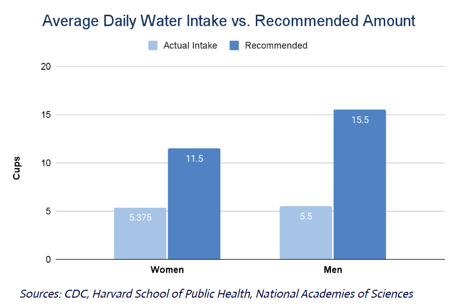
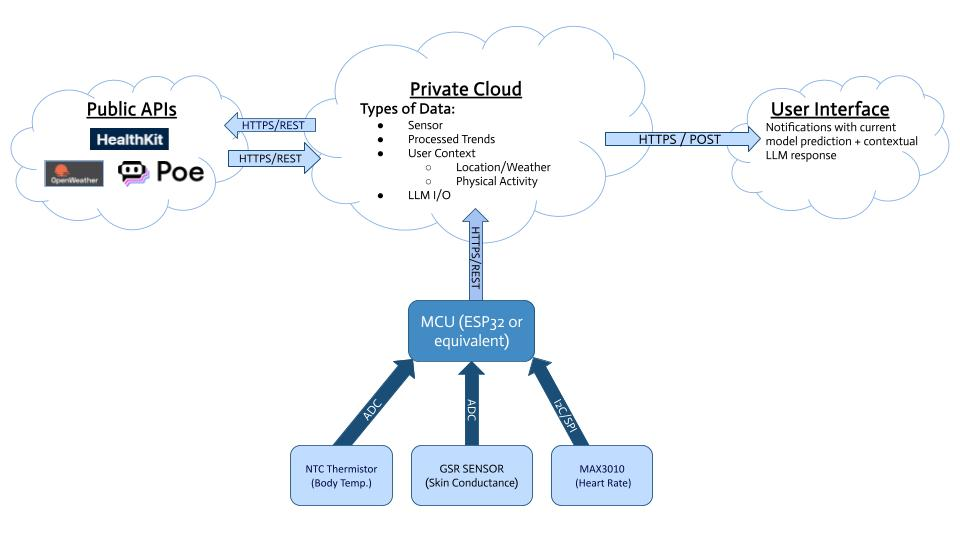
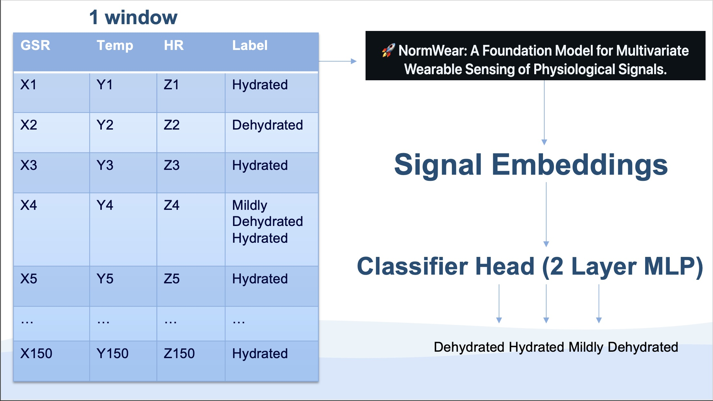
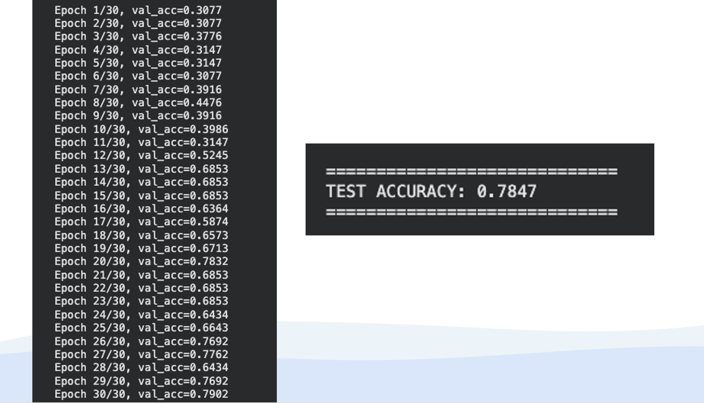
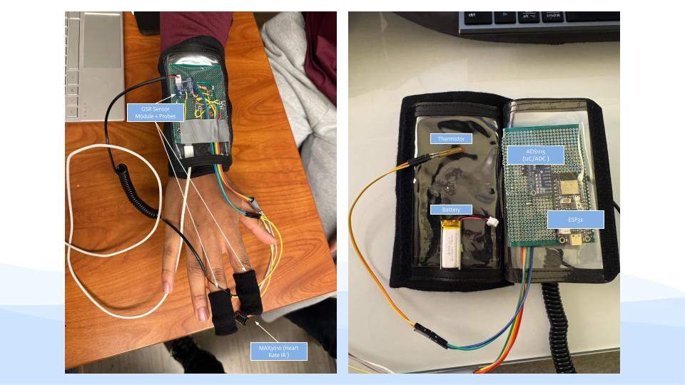

HYDR.AI
A smart hydration band wearable that monitors heart rate, skin temperature, and skin conductance to detect early signs of dehydration and alert the user when it’s time to rehydrate.
Dehydration significantly impacts cognitive performance and health, yet generic intake guidelines often fail to account for real-time biological needs. HYDR.AI is an Artificial Intelligence of Things (AIoT) wearable system designed to provide personalized hydration monitoring. The device integrates an ESP32 microcontroller with sensors for Heart Rate, Skin Temperature, and Galvanic Skin Response (GSR) to capture real-time biosignals. This data is transmitted to a Google Cloud Run architecture where it is analyzed alongside environmental context (weather and location) and physical activity context (daily steps and active calories) from various APIs to classify hydration states. The system delivers timely notifications and actionable water intake recommendations to the user's device from a notification service. This ensures users stay optimally hydrated based on their specific physiological conditions.
Motivation
“Staying hydrated starts with knowing your body's specific needs” - Alex Germano, MD
The Hydration Gap
Despite the clear importance of water for health, most Americans chronically under-hydrate. Data suggests a startling gap: on average, men consume only ~5.5 cups of their recommended 15.5 cups, while women consume just ~5.4 cups against a target of 11.5 cups. This deficit directly impacts energy, cognitive focus, and overall health.
Why HYDR.AI?
Generic "drink water" reminders aren't enough because they ignore the individual's real-time physiological state. Hydr.AI closes this gap by moving beyond static schedules.
We utilize an AIoT wearable to monitor real-time biosignals—specifically Heart Rate, Skin Temperature, and Galvanic Skin Response (GSR). By combining these physiological markers with environmental data, our system detects early signs of dehydration to provide personalized alerts that keep users performing at their peak.
System
Architecture
HYDR.AI operates on a robust four-stage pipeline: Data Collection, Edge Processing, Cloud Intelligence, and User Feedback. Our system integrates custom embedded hardware with a containerized cloud backend to deliver real-time, context-aware hydration analytics.
1. Sensing Pipeline (Hardware Layer)
The wearable device is built around an ESP32 microcontroller acting as the central hub. To ensure high-precision data acquisition, we utilize an ADS1115 ADC (Analog-to-Digital Converter) to interface with analog biosensors. The sensor suite includes:
- MAX3010: Captures photoplethysmography (PPG) data for Heart Rate variability.
- GSR Sensor: Measures skin conductance (Galvanic Skin Response) to track sweat gland activity.
- NTC Thermistor: Monitors real-time skin temperature.
2. Data Handling & Forwarding (Edge Layer)
Raw sensor data is transmitted via I2C/ADC to the ESP32, which forwards the payload via HTTP POST to a local edge gateway.
A custom Python script (cloud_HRCalc.py) running on the gateway serves two roles:
- Preprocessing: Performs initial signal cleaning and raw value conversion.
- Orchestration: Forwards data to our cloud container and manages the "Heartbeat" of the system by triggering the recommendation engine on a set timer.
3. Cloud Backend & Intelligence
The core logic resides in a Dockerized FastAPI container hosted on Google Cloud Run. The backend exposes three custom endpoints:
- @/sensor: Ingests high-frequency biosignal data from the hardware and processes the data to get compatible values for the model.
- @/apple-health: Integrates external health context (Step Count, Active Energy) via the HealthKit Auto Export API. This data orignates from an automation sync JSON in the Auto Export App linked to the users Apple Health Data
- @/recommendation: The decision engine. It aggregates historical sensor trends, environmental context (fetched via OpenWeather API), and physical activity.
This aggregated sensor data is fed into our {INSERT TYPE OF MODEL, ones shot etc} ML Hydration Model to predict the user's hydration state. The prediction, combined with weather and activity data, is sent to a Large Language Model (via Poe API) to generate a natural language, actionable hydration tip.
4. User Experience (Feedback Loop)
The final recommendation is delivered instantly to the user's smartphone via ntfy.sh (Pub/Sub notification service). This closes the loop, providing the user with timely, scientifically grounded advice rather than generic reminders.
Technical Components
Our system leverages a heterogeneous tech stack, combining low-level embedded hardware with high-level cloud microservices.
Hardware Layer
- MCU: ESP32 Microcontroller (Wi-Fi enabled).
- ADC: ADS1115 (16-bit precision for analog sensors).
- Sensors:
- MAX3010 (PPG/Heart Rate)
- NTC Thermistor (Skin Temp)
- GSR Module (Skin Conductance)
Software & Cloud
- Backend: FastAPI (Python) for high-performance REST endpoints.
- Containerization: Docker & Google Cloud Run for serverless deployment.
- Database: SQLite/SQLAlchemy for sensor logging.
- Notifications: ntfy.sh (Pub/Sub service).
AI & Data
- ML Framework: PyTorch (Custom TFC-based Hydration Model).
- LLM Engine: Poe API (Context-aware natural language generation).
- External APIs:
- OpenWeatherMap (Real-time weather).
- Apple HealthKit (Activity metrics).
Machine Learning Inference Engine
HYDR.AI uses a deep learning architecture to estimate hydration levels from wearable sensor data.
-
Architecture:
Sensor data is segmented into short time windows and processed by a pretrained NormWear encoder,
which converts raw biosignals into compact signal embeddings. A lightweight two-layer neural
network classifier maps these embeddings to hydration states: hydrated, mildly dehydrated, or dehydrated.

-
Training & Optimization:
The model is trained using labeled sensor windows and transfer learning to achieve high performance
with limited data. Key parameters such as window size, learning rate, and classifier depth were tuned
to balance classification accuracy and real-time efficiency.

- Integration: The model is serialized and embedded directly into the backend container, allowing for low-latency inference on every API request without external dependencies.
Prototype
Our prototype consists of a wearable sensor setup connected to a microcontroller, demonstrating real-time data collection and hydration inference.
Results
Remember to use figures to help illustrate results
References
Luo, Y., Chen, Y., Salekin, A., & Rahman, T. (2023). Toward Foundation Models for Multivariate Wearable Sensing of Physiological Signals. Proceedings of the ACM on Interactive, Mobile, Wearable and Ubiquitous Technologies (IMWUT).
Our Team
Lina Cheung
Biomedical Engineering M.S.
LinkedIn

Team Member
Description and link
Team Member
Description and link
Contact
Lina Cheung: lc3749@columbia.edu
Contact Name 2: email here
Other Contact Information: other contact info
Columbia University Department of Electrical Engineering
Instructor: Professsor Xiaofan (Fred) Jiang